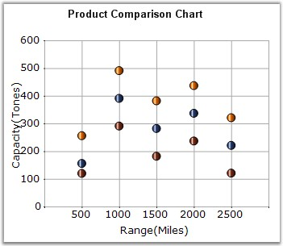

Scatter Charts, also known as XY Charts, are a plot of y values and x values along the two axes. The points are not joined together and can be customized using shapes or images to make them easily identifiable, usually independent of time.
The scatter graph lets you plot data points based on two independent variables. The variable that we seek to predict is called the dependent variable or y-variable. The variable on which it depends is called the independent variable or the x-variable. Scatter graphs can chart multiple data sets, each represented by a different symbol and each having any number of data points.
It is used to display numerical data, either discrete or continuous. Scatter charts are commonly used for visualizing scientific data.
The following image shows a multi series Scatter Chart.

Figure 68: Chart displaying Scatter Series
Chart Details
|
Details | |
|
Number of Y values per point |
1 |
|
Number of Series |
One or More. |
|
Cannot be Combined with |
Pie, Bar, Stacked Bar charts, Polar, Radar. |
Scatter series can be added to the chart using the following code.
|
[C#]
// Create chart series and add data points into it. ChartSeries series = this.ChartWebControl1.Model.NewSeries ("Series Name",ChartSeriesType.Scatter); series.Points.Add (0, 1); series.Points.Add (1, 3); series.Points.Add (2, 4);
// Add the series to the chart series collection. this.ChartWebControl1.Series.Add (series); |
|
[VB.NET]
' Create chart series and add data points into it. Dim series As ChartSeries = Me.ChartWebControl1.Model.NewSeries ("Series Name", ChartSeriesType.Scatter) series.Points.Add (0, 1) series.Points.Add (1, 3) series.Points.Add (2, 4)
' Add the series to the chart series collection. Me.ChartWebControl1.Series.Add (series) |
The symbols can be configured using the ChartSeries.Styles[i].Symbol property as in the following example.
|
[C#]
// Specify the symbol info required for the Scatter chart. series.Styles [0].Symbol = new ChartSymbolInfo(); series.Styles [0].Symbol.Color = Color.Red; series.Styles [0].Symbol.Shape = ChartSymbolShape.InvertedTriangle;
series.Styles [1].Symbol = new ChartSymbolInfo(); series.Styles [1].Symbol.Color = Color.Green; series.Styles [1].Symbol.Shape = ChartSymbolShape.Hexagon;
series.Styles [2].Symbol = new ChartSymbolInfo(); series.Styles [2].Symbol.Color = Color.Blue; series.Styles [2].Symbol.Shape = ChartSymbolShape.Cross; |
|
[VB.NET]
' Specify the symbol info required for the Scatter chart. series.Styles (0).Symbol = New ChartSymbolInfo() series.Styles (0).Symbol.Color = Color.Red series.Styles (0).Symbol.Shape = ChartSymbolShape.InvertedTriangle
series.Styles (1).Symbol = New ChartSymbolInfo() series.Styles (1).Symbol.Color = Color.Green series.Styles (1).Symbol.Shape = ChartSymbolShape.Hexagon
series.Styles (2).Symbol = New ChartSymbolInfo() series.Styles (2).Symbol.Color = Color.Blue series.Styles (2).Symbol.Shape = ChartSymbolShape.Cross |
See Also